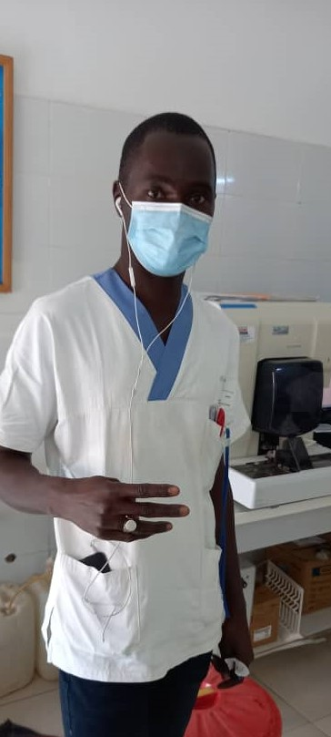

.PNG)
Pour le patient,c'est la que se deroule la consultation. trois parametres peuvent etre regles par le dentiste selon la morphologie du patient et de la zone de la bouche a la quelle il souhaite acceder: la hauteur du siege son inclinaisonet la hauteur de la tetiere, la partieoul'on repose sa tete
LA RECEPTIONNISTE
Le receptionniste est la premiere personne que voit le client en arrivant . Son role d'accueil et d'information directe est primordial. ... Il a egalement un role administratif indirect important, en amont de l'arrivee du client, dans la gestion des appels, des reservations et des plannings
SOURCING MANAGER
La gestion du panel fournisseurs consiste a suivre les evolutions internes (nouveaux besoins, changements de process industriels, changements d'organisation ou d'appartenance, etc.), et les eÃÅvolutions du marche (technologiques, normatives, reglementation, fournisseurs, etc.) afin d'en tirer les consequences en terme de gestion contractuelle et procedurale.
LA RESPONSABLE SEO
Le responsable SEO fait partie integrante de l'equipe d'expert en referencement. C'est un manager. Il coordonne son equipe de referenceurs, et veille au bon deroulement des actions strategiques. Son domaine de predilection est le SEO, le referencement naturel. Sa mission est donc de permettre aux sites web d'obtenir une meilleure place dans les resultats de recherche. Une bonne vision strategique, une sensibilite au marketing et un attrait pour les relations humaines sont quelques-unes de ses qualites.
LE CHEF DE PROJET
Le chef de projet (CDP) est la personne chargee de mener un projet et de gerer son bon deroulement. De maniere generale, il anime une equipe pendant la duree du ou des divers projets dont il a la charge
LE CHIRULGIEN DENTISTE
Le chirurgien dentiste est un professionnel de la sante dote de la double fonction de dentiste et de chirurgien. Passionne de medecine, il est a la fois mecanicien des dents et chirurgien averti. Il soigne les dents et conseille ses patients en prevention bucco-dentaire. Issu d'une longue formation medicale, il est l'interlocuteur privilegie des petits et des grands quant au soin de leurs dents. il est notre conseiller en vente